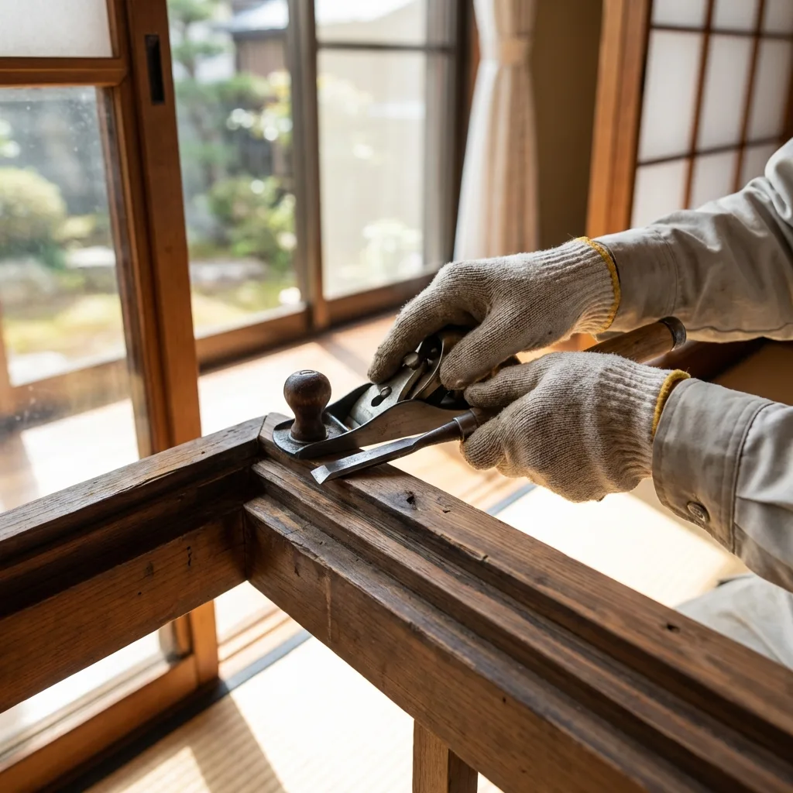
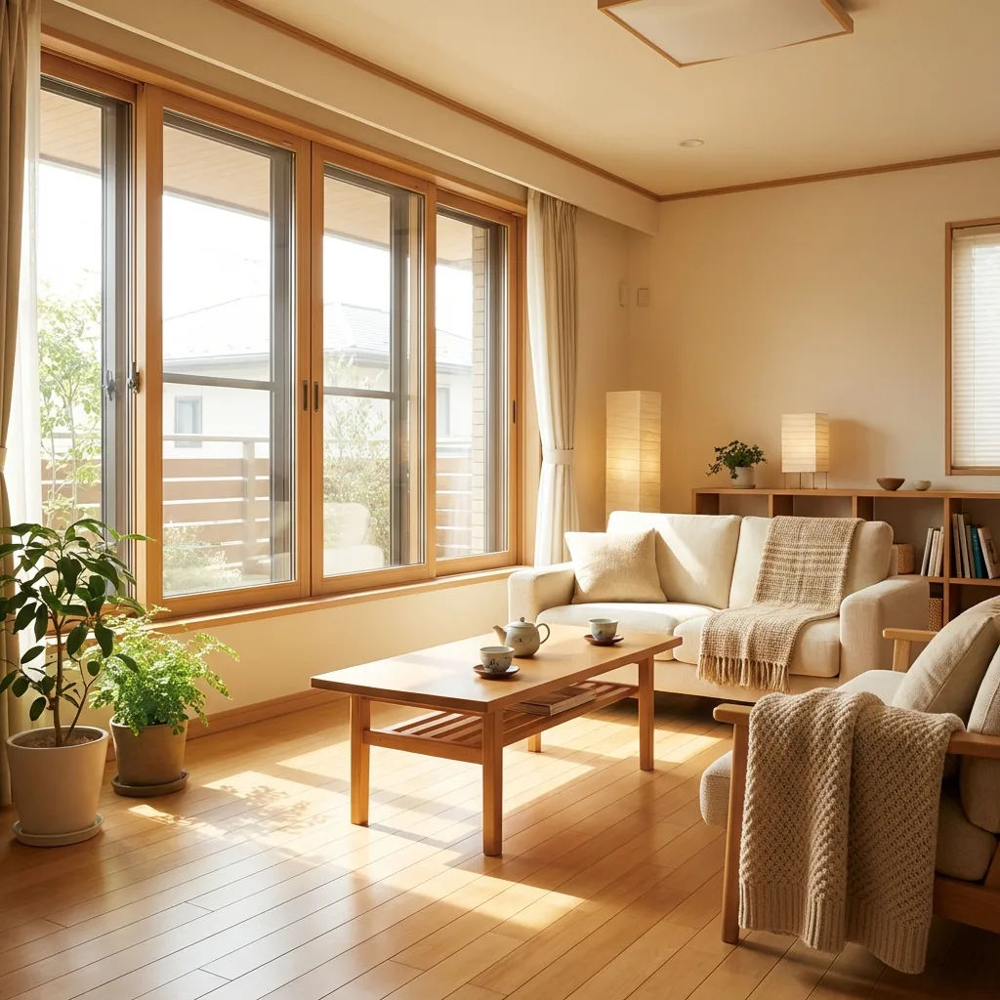
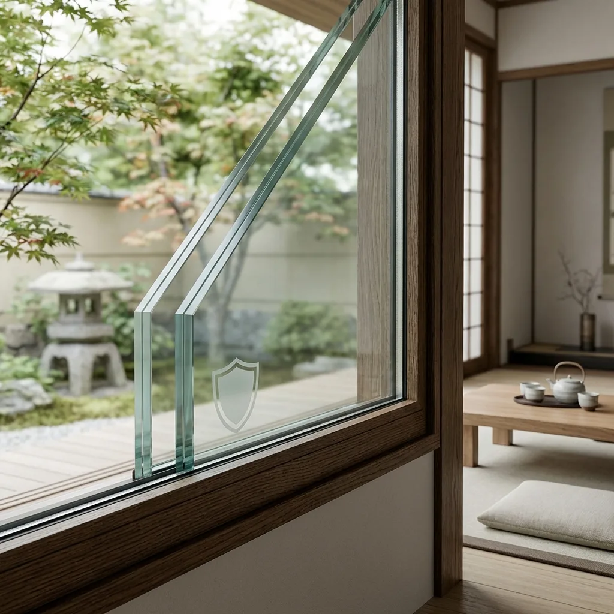

Our services
事業紹介
ガラス一枚の修理から、窓まわりのリフォームまで。お悩みと住まいに合った施工をご提案します。

01 / Glass repair
ガラス修理・交換
一枚のガラスから、いつもの安心を。
割れたガラスや小さなひびも、まずはご相談ください。ガラスの種類とサイズを確認し、採寸から交換まで丁寧に対応します。防犯性や断熱性を高めるガラスへの交換も承ります。
- 透明・すり・網入りガラスの割れ替え
- ペアガラス・真空ガラスへの交換
- 防犯ガラスのご相談
当日対応はガラスの種類・在庫・現場の状況によります。お急ぎの場合はお電話ください。

02 / Window & sash
サッシ・内窓
開けるたびに、心地よい窓へ。
窓の開け閉めが重い、すきま風が気になる。そんなお悩みは、戸車の交換やレールの調整で改善できる場合があります。内窓の設置やサッシの交換など、住まいに合う方法をご提案します。
- サッシ調整・戸車の交換
- 内窓（二重窓）の設置
- 玄関ドア・勝手口の交換、網戸の張り替え
断熱・防音・結露軽減の効果は、建物や設置条件によって異なります。現地の状態を確認してご案内します。

03 / Window film
窓用フィルム
今ある窓に、もうひとつの機能を。
日差しの暑さ、外からの視線、万一のガラスの飛散。気になることに合わせて、窓用フィルムをご提案します。ガラスの種類や設置環境を確認し、適した製品を丁寧に施工します。
- 飛散防止フィルム
- 遮熱・UVカットフィルム
- 目隠しフィルム
フィルムの種類によって機能は異なります。ガラスとの適合性を確認したうえで施工します。
How it works
ご相談から、施工まで。
初めてのご依頼でも、ひとつずつ丁寧に。
内容とお見積もりにご納得いただいてから進めます。
お問い合わせ
お電話またはLINEで、気になることをお聞かせください。
現地確認・お見積もり
窓の状態やサイズを確認し、施工内容と費用をご案内します。
日程調整・施工
内容にご納得いただいたうえで日程を調整し、丁寧に施工します。
仕上がりのご確認
施工箇所や使い方を一緒に確認。気になる点もお伝えください。
Contact
窓のこと、
気軽に話してみませんか。
小さな修理から、住まいの見直しまで。
ご相談・お見積もりは無料です。